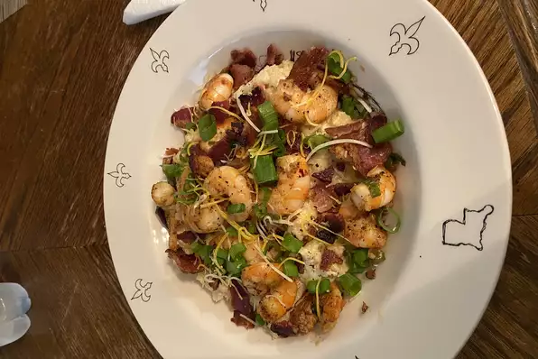

Shrimp and Cheesy Grits with Bacon

Description
Lowcountry style shrimp and grits at its best!
Ingredients
- Chicken broth
- Evaporated milk
- Grits
- Salt
- Cheddar cheese
- Bacon
- Dried onion
Steps
-
Bring chicken broth and evaporated milk to a boil in a large saucepan; stir in grits and salt and return to a boil. Reduce heat to low, cover, and simmer grits until thick, stirring often, about 5 minutes. Stir in 1 cup Cheddar cheese until melted. Set grits aside and keep warm.
-
Cook and stir bacon in a large skillet over medium heat until crisp, 8 to 10 minutes. Transfer bacon to a bowl. Drain all but 2 tablespoons of bacon drippings from the skillet and cook and stir shrimp, green bell pepper, and onion in bacon drippings until shrimp are bright pink and no longer translucent inside and green pepper is tender, 5 to 8 minutes. Stir bacon into shrimp mixture.
-
Spread grits into a serving dish, top with shrimp mixture, and sprinkle with 1 tablespoon Cheddar cheese for garnish.
Return Home